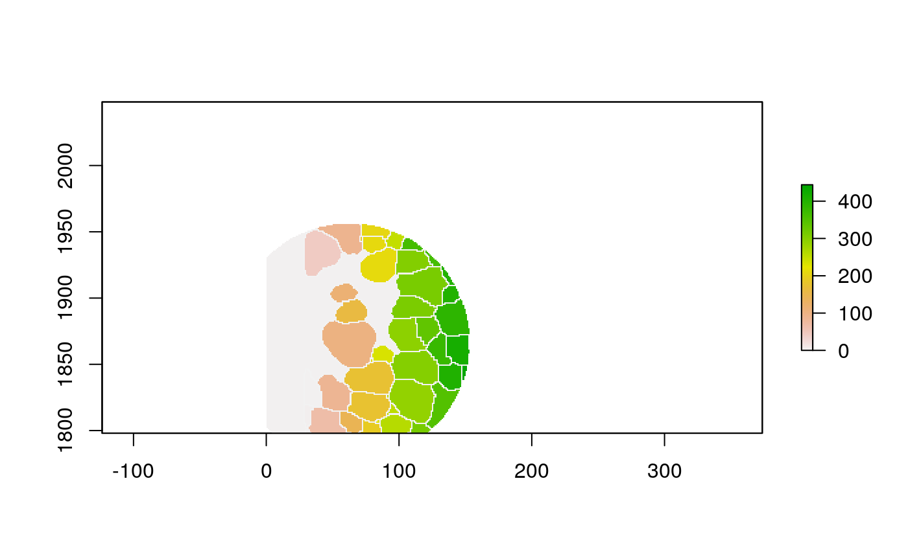
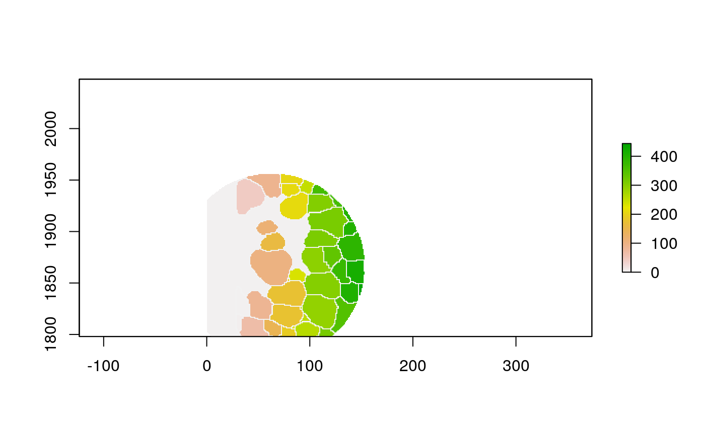

For the MIBI data, we have segmentation masks telling us where the cells are located. The masks themselves are not interesting. However, they give information about cell-ecosystem heterogeneity and composition which is very interesting. This script produces some intermediate outputs that get more directly at those questions,
- Polygons: We convert the raster into shapefiles, so that we can apply geometric logic to them (getting centroids, areas, borders, …)
- Graphs: We can think of each cell as a node and declare edges if the cells are within a certain distance / are K nearest neighbors.
- Derived Statistics: For either polygons or graphs, we show how you can get statistics from local neighborhoods, like the proportion of the local neighborhood that’s background.
library("dplyr")
##
## Attaching package: 'dplyr'## The following objects are masked from 'package:stats':
##
## filter, lag## The following objects are masked from 'package:base':
##
## intersect, setdiff, setequal, union##
## Attaching package: 'igraph'## The following objects are masked from 'package:dplyr':
##
## as_data_frame, groups, union## The following objects are masked from 'package:stats':
##
## decompose, spectrum## The following object is masked from 'package:base':
##
## unionlibrary("raster")
## Loading required package: sp##
## Attaching package: 'raster'## The following object is masked from 'package:dplyr':
##
## select## Linking to GEOS 3.6.2, GDAL 2.2.3, PROJ 4.9.3library("spdep")
## Loading required package: spData## To access larger datasets in this package, install the spDataLarge
## package with: `install.packages('spDataLarge',
## repos='https://nowosad.github.io/drat/', type='source')`library("stars")
## Loading required package: abindlibrary("stringr") library("BIRSBIO2020.scProteomics.embeddings") theme_set(theme_bw() + theme(panel.grid=element_blank()))
First, we’ll download all the data, if they’re not already present in the $HOME/Data folder.
# if data folder doesn't exist, download and unzip data_paths <- download_data(file.path(Sys.getenv("HOME"), "Data"))
## Warning in dir.create(directory, recursive = TRUE): '/github/home/Data' already
## existssample_id <- params$sample_id f <- list.files(data_paths[[3]], str_interp("p${sample_id}_"), full.names = TRUE) im <- raster(f) im <- crop(im, extent(im, 0, 250, 0, 250)) # comment out to run on full data
## Warning in .local(x, ...): invalid first colummn## Warning in .local(x, ...): invalid first rowPolygonization
It can be helpful to work directly with polygon geometries, rather than the original raster image. You can then use any logic you’d have used for manipulating geographic shapefiles, for example.
polys <- st_as_stars(im) %>% st_as_sf(merge = TRUE) %>% st_cast("POLYGON") colnames(polys)[1] <- "cellLabelInImage"
This will join polygons that are neighbors. Notice that there is a thin border between cells, so we’ll ignore that using the snap argument in poly2nb.
## Parsed with column specification:
## cols(
## .default = col_double()
## )## See spec(...) for full column specifications.polys <- polys %>% inner_join(cell_data) %>% group_by(cellLabelInImage) %>% # some regions get split into two adjacent polys --> merge inner_join(cell_data) %>% group_by(cellLabelInImage) %>% summarise_all(function(x) { x[1] })
## Joining, by = "cellLabelInImage"## Joining, by = c("cellLabelInImage", "SampleID", "cellSize", "C", "Na", "Si", "P", "Ca", "Fe", "dsDNA", "Vimentin", "SMA", "Background", "B7H3", "FoxP3", "Lag3", "CD4", "CD16", "CD56", "OX40", "PD1", "CD31", "PD-L1", "EGFR", "Ki67", "CD209", "CD11c", "CD138", "CD163", "CD68", "CSF-1R", "CD8", "CD3", "IDO", "Keratin17", "CD63", "CD45RO", "CD20", "p53", "Beta catenin", "HLA-DR", "CD11b", "CD45", "H3K9ac", "Pan-Keratin", "H3K27me3", "phospho-S6", "MPO", "Keratin6", "HLA_Class_1", "Ta", "Au", "tumorYN", "tumorCluster", "Group", "immuneCluster", "immuneGroup")With these shapefiles, we can use geographic plotting tools. For example, this plots the immune group for each geometry.
ggplot(polys) + geom_sf(aes(fill=as.factor(immuneGroup))) + scale_x_continuous(expand = c(0, 0)) + scale_y_continuous(expand = c(0, 0)) + theme(legend.position = "bottom")

Graph Construction
Sometimes we care less about the locations / sizes of individual cells than their connectivity / mixing structure. In the plot below, nodes are located at the original cell positions, and contiguity and knn edges are blue and red, respectively.
nb_contig <- poly2nb(polys, snap=1) coords <- polys %>% .[["geometry"]] %>% st_centroid() %>% st_coordinates() nb_knn <- knn2nb(knearneigh(coords, k = 5)) plot(polys$geometry[seq_len(nrow(polys))]) plot(nb_knn, coords, add=T, col="#476a79") plot(nb_contig, coords, add=T, col="#97293f")

We can turn this into a more familiar igraph object, for access to the usual graph manipulation routines.
G <- extract_graph(polys)
## Warning in st_centroid.sf(geometries): st_centroid assumes attributes are
## constant over geometries of xplot(G, vertex.size=3, edge.arrow.size=0, vertex.label=NA)

Raster Window Features
With these new data structures, we can compute some cell-level summaries. First, let’s look at features defined on windows centered around individual cells.
The function below applys fun to the buffered window around the cell with label cell_id. For example, we can use it to get the proportion of each type of immune group within a window around that cell. This can be used to define a localized cell heterogeneity, for use in downstream analysis. We plot each of the image subwindows surrounding a single cell.
#' How dense are cells, relative to background? cell_ids <- unique(polys$cellLabelInImage) loop_stats(cell_ids[1:10], "raster", im, polys, background_prop)


 

## # A tibble: 20 x 3
## cellLabelInImage background props
## <dbl> <chr> <dbl>
## 1 2 FALSE 0.500
## 2 2 TRUE 0.500
## 3 3 FALSE 0.525
## 4 3 TRUE 0.475
## 5 4 FALSE 0.549
## 6 4 TRUE 0.451
## 7 42 FALSE 0.449
## 8 42 TRUE 0.551
## 9 59 FALSE 0.359
## 10 59 TRUE 0.641
## 11 62 FALSE 0.354
## 12 62 TRUE 0.646
## 13 66 FALSE 0.572
## 14 66 TRUE 0.428
## 15 85 FALSE 0.542
## 16 85 TRUE 0.458
## 17 90 FALSE 0.441
## 18 90 TRUE 0.559
## 19 102 FALSE 0.590
## 20 102 TRUE 0.410Neighbor Features
Alternatively, we could ignore the spatial information entirely, and summarize cells according to the properties of their neighbors.
loop_stats(cell_ids[1:10], "graph", G, polys, background_prop)
## # A tibble: 10 x 3
## cellLabelInImage background props
## <dbl> <chr> <dbl>
## 1 2 FALSE 1
## 2 3 FALSE 1
## 3 4 FALSE 1
## 4 42 FALSE 1
## 5 59 FALSE 1
## 6 62 FALSE 1
## 7 66 FALSE 1
## 8 85 FALSE 1
## 9 90 FALSE 1
## 10 102 FALSE 1